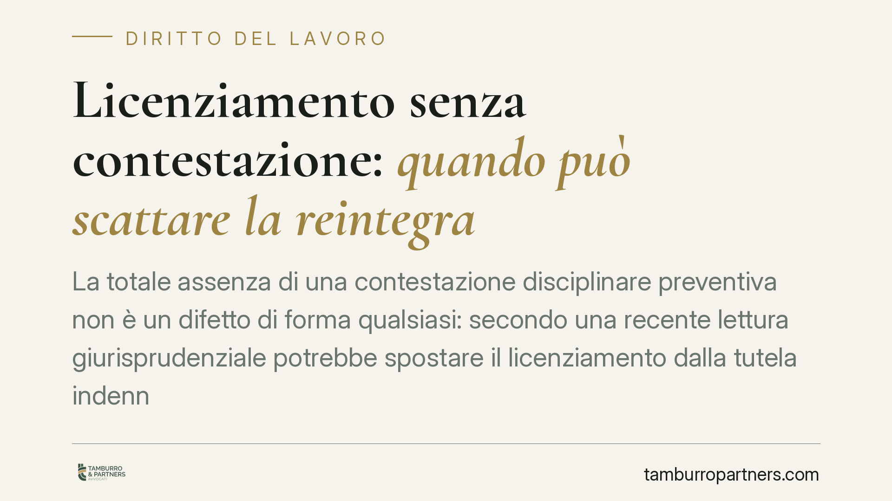

Licenziamento senza contestazione: quando può scattare la reintegra
La totale assenza di una contestazione disciplinare preventiva non è un difetto di forma qualsiasi: secondo una recente lettura giurisprudenziale potrebbe spostare il licenziamento dalla tutela indennitaria a quella reintegratoria. Il punto, ancora da consolidare, riguarda il confine tra vizio procedurale e insussistenza del fatto e tocca direttamente l'organizzazione dei datori di lavoro.

Il fatto
Secondo quanto riportato dalla stampa specializzata, la Corte di Cassazione, Sezione Lavoro, sarebbe intervenuta su un caso di licenziamento disciplinare intimato in totale assenza di contestazione preventiva, riformando una decisione della Corte d'appello di Ancona.
Una precisazione doverosa: gli estremi dell'ordinanza indicati nella notizia di origine (numero e anno) non risultano, allo stato, verificabili attraverso le banche dati e le massime ufficiali. Invitiamo pertanto a trattare il dato come da verificare: in attesa del deposito e della massima ufficiale, ci limitiamo a ragionare sul principio di diritto riferito, senza assumerlo come orientamento consolidato.
Inquadramento normativo
Il procedimento disciplinare ruota attorno all'art. 7 della Legge 300/1970 (Statuto dei lavoratori), che impone al datore di contestare per iscritto l'addebito e di garantire al lavoratore il diritto di difendersi prima di irrogare la sanzione. È la traduzione, nel rapporto di lavoro, del principio del contraddittorio: nessuna sanzione senza che l'interessato abbia potuto far valere le proprie ragioni.
Sul versante sanzionatorio, per i lavoratori assunti dal 7 marzo 2015 opera il D.Lgs. 23/2015. L'art. 4 disciplina i vizi procedurali (tra cui le irregolarità nel procedimento disciplinare), ai quali di norma consegue una tutela solo indennitaria, di importo ridotto. L'art. 3, comma 2, prevede invece la reintegrazione attenuata (reintegra con indennità risarcitoria limitata) quando sia provata in giudizio l'insussistenza del fatto materiale contestato.
Il confine tra vizio formale e insussistenza
Qui si colloca il nodo giuridico. Una contestazione irregolare – tardiva, generica, incompleta – resta un vizio procedurale e ricade, secondo l'orientamento prevalente, nell'art. 4: tutela indennitaria.
Diverso, in tesi, il caso della totale assenza di contestazione. Il ragionamento riferito alla pronuncia è il seguente: se nessun addebito è mai stato formalmente mosso, il datore non ha nemmeno messo in condizione il giudice di verificare l'esistenza di un fatto disciplinarmente rilevante. L'impossibilità di provare il fatto si tradurrebbe, sul piano processuale, in una sua insussistenza, con conseguente applicazione dell'art. 3, comma 2, e quindi della reintegra attenuata.
Va detto con chiarezza che si tratta di un passaggio non pacifico. La giurisprudenza maggioritaria tende a inquadrare i vizi del procedimento disciplinare nell'alveo dell'art. 4, non come insussistenza del fatto. L'equiparazione tra "nessuna contestazione" e "fatto insussistente" è una lettura che, ove confermata, segnerebbe un'evoluzione significativa, ma che oggi va proposta come interpretazione e non come regola acquisita.
La questione delle piccole imprese e delle tutele crescenti
La notizia di origine estende il principio anche al regime delle tutele crescenti e alle piccole imprese. Su questo punto invitiamo alla massima cautela: si tratta della lettura attribuita alla pronuncia, non di un orientamento consolidato. L'estensione della tutela reintegratoria a contesti – come le imprese sotto soglia dimensionale – tradizionalmente orientati verso la sola tutela economica è un'affermazione forte, che richiede la motivazione ufficiale per essere valutata. Fino ad allora, resta un'ipotesi interpretativa.
Implicazioni pratiche per il datore di lavoro
Al di là della sorte della singola ordinanza, il messaggio operativo è solido e indipendente dalla sua conferma: la contestazione disciplinare non è un adempimento formale rinunciabile. Saltarla del tutto – intimando il licenziamento "a sorpresa" per un comportamento ritenuto grave – espone a un rischio sanzionatorio potenzialmente più pesante della semplice indennità, oltre a compromettere la stessa tenuta probatoria dell'addebito in giudizio.
Il costo di una contestazione fatta correttamente è minimo. Il costo di un licenziamento annullato, con eventuale reintegra e risarcimento, è ben più alto.
Cosa fare in concreto
- Contesta sempre per iscritto, prima di qualsiasi sanzione. Non esistono casi talmente gravi da giustificare l'omissione del contraddittorio.
- Descrivi il fatto in modo specifico: data, luogo, condotta, circostanze. Evita formule generiche che indeboliscono la contestazione.
- Rispetta i termini a difesa (almeno cinque giorni) e valuta le giustificazioni prima di decidere, documentando l'iter.
- Conserva le prove dell'addebito già in fase di contestazione: la mancata prova del fatto, in giudizio, è il vero punto debole.
- Fatti assistere prima di irrogare la sanzione, non dopo: una procedura impostata correttamente riduce l'alea del contenzioso.
Disclaimer
Contributo informativo a cura di Tamburro & Partners – Avv. Giuseppe Tamburro. Non costituisce parere legale.
Ogni storia di lavoro ha i suoi tempi.
Se gestisci HR e vuoi un confronto su contenzioso, ispezioni o licenziamenti, scrivi allo studio. Ti rispondiamo entro un giorno lavorativo.